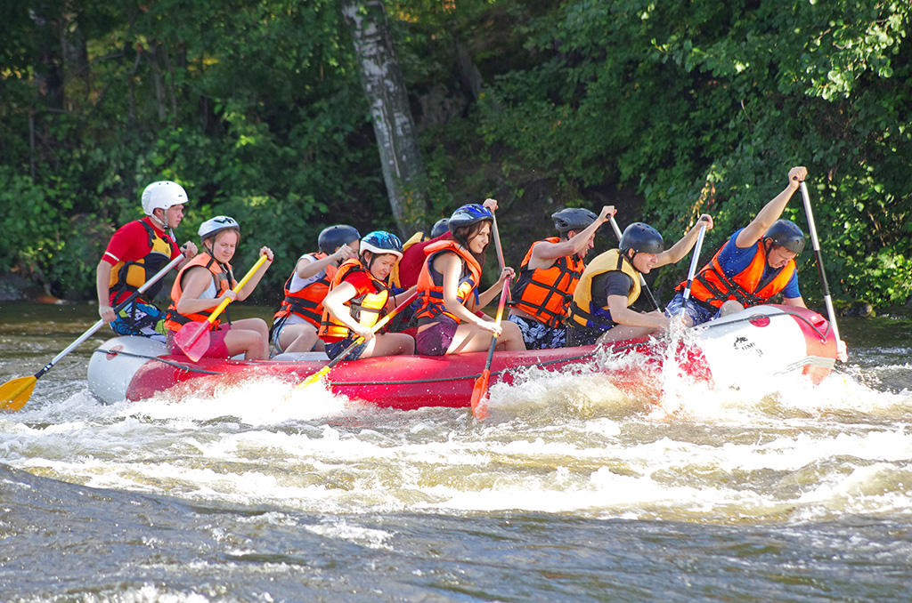

Our Purpose: To connect adventurers with the raw power and beauty of the river through unforgettable whitewater experiences. Our Mission: To deliver safe, thrilling, and eco-conscious rafting expeditions led by expert guides who treat every guest like family. Our Creed: We respect the water, trust our crew, paddle as one, and leave every riverbank cleaner than we found it. Our Motto: "Ride the Rapids, Respect the River.

Hayatu Rafting Site
History
Founded by a small group of passionate river guides, Hayatu Rafting began with two inflatable rafts, a handful of paddles, and a deep love for the Nile's thrilling rapids. What started as weekend excursions for local thrill-seekers quickly grew into a premier whitewater adventure outfitter known for safety, hospitality, and environmental stewardship. Over the years, we have expanded our fleet and trained a dedicated team of certified river guides, welcoming thousands of paddlers from around the world to experience the rush of the river firsthand.